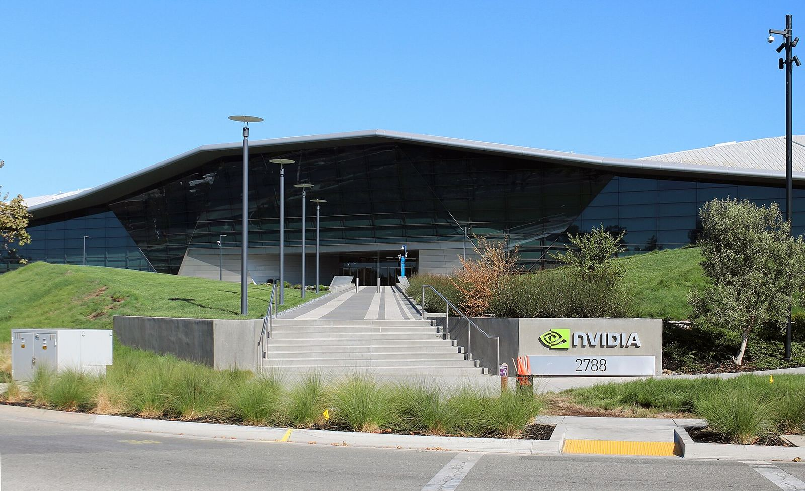

英伟达宣布与 IBM、美国能源部费米国家加速器实验室计划开展模块化量子–经典协同设计平台合作：将把 NVIDIA DGX B200 系统与包括 IBM Quantum Nighthawk 在内的 IBM 量子计算机共置；并发布 CUDA-Q 新解码算法 TCBP-JOBS，称用于量子纠错研究的解码最高可加速 13,000 倍，把研究新量子计算设计的计算时间从 12 周缩短至 45 分钟


英伟达于 2026 年 11 月 16 日发布新闻稿宣布，计划与 IBM 以及美国能源部费米国家加速器实验室（Fermi National Accelerator Laboratory，Fermilab）开展新的合作，范围涵盖下一代模块化量子计算机架构、科学应用，以及与超级计算的集成。新闻稿写明，这些工作包括与 IBM、费米实验室共同建设一个新的模块化量子计算协同设计平台，把英伟达的加速计算与软件同 IBM 的量子计算机结合起来，以帮助研究者扩展量子计算机并探索其科学能力。IBM 与费米实验室同日也分别发布新闻稿，宣布这项计划。
英伟达称，IBM 与英伟达正在把 NVIDIA DGX B200 系统与先进的 IBM 量子计算机共置，其中包括由 IBM Quantum Nighthawk 驱动的系统；新闻稿称 Nighthawk 是 IBM 交付过的最快量子处理器。该集成系统将支持三方共同开发的模块化量子协同设计平台。新闻稿写明，该平台将使研究者能够开发并评估纠错码、解码算法，以及推动高能与核物理（HENP）科学发现的量子–经典应用，并研究经典系统如何与多个相连的量子处理器在模块化架构中一同扩展。费米实验室的专长将使平台上的工作聚焦于量子纠错与 HENP 应用。费米实验室首席技术官、SQMS 中心主任 Anna Grassellino 在英伟达新闻稿中说，这是一个“拟议平台”（proposed platform）。
英伟达应用量子计算研究副总裁 Krysta Svore 说：“要让量子计算机对科学有用，需要在纠错、应用，以及把量子处理器与加速计算结合在一起的系统上取得进展。”“英伟达的研究软件以及我们与 IBM 的合作，为科学家提供了更有力的工具，以便在这些系统上研究量子设计并开发应用。”IBM Fellow、量子中心计算首席技术官 Jerry Chow 说：“如果没有量子计算，科学中一些最根本的问题仍无法触及。把量子与经典一同扩展，将在高能与核物理及其他领域打开新的前沿。”
同一份新闻稿还单独宣布，英伟达发布了新的解码算法 TCBP-JOBS，作为 CUDA-Q 平台的一部分。公司称，与现有领先算法相比，该算法的解码最高可加速 13,000 倍，把研究新量子计算设计的计算时间从 12 周缩短至 45 分钟。新闻稿写明，该算法已通过 NVIDIA CUDA-Q QEC 0.9.0 库提供，可在量子纠错研究中加速计算密集部分，同时保持高准确度，从而更高效地评估候选纠错方案，并探索不同编码与解码器配置的表现。
与现有领先算法相比，该算法的解码最高可加速 13,000 倍，把研究新量子计算设计的计算时间从 12 周缩短至 45 分钟。
英伟达还宣布，正在扩展开源作业调度器 Slurm，增加量子接口，以简化把量子处理器纳入超级计算工作流；IBM 则通过其 Quantum Resource Management Interface 参与集成，把 IBM 量子资源接入这些新的 Slurm 能力。新闻稿用“将允许”（will allow）描述这些能力，写明超级计算中心将能用熟悉的命令、策略与工具，把量子处理器与 CPU、GPU 一并调度。新闻稿末尾说明，文中许多产品与功能仍处于不同阶段，将在可供使用时提供，其开发、发布与时间表可能变化，并由英伟达自行决定。
同一新闻稿还提到，IBM 与日本理化学研究所（RIKEN）正在推进由英伟达加速计算支持的量子–经典化学研究：把 IBM 量子计算机与理研的 JHPC-quantum GPU 超级计算机 ROQUO 结合，该项工作入围 2026 年 ACM Gordon Bell Prize 决赛。研究团队计算了两个蛋白–配体复合物的结合能；新闻稿称，通过把系统分成片段，并将量子采样与 GPU 加速计算结合，他们为最多 12,635 个原子的复合物建模，规模超过此前 303 个原子的量子–经典基准 40 倍以上。ROQUO 使用 NVIDIA GB200 系统与 NVIDIA Quantum-X800 InfiniBand 网络。该研究得到日本新能源产业技术综合开发机构（NEDO）支持。
来源
- NVIDIA Newsroom：NVIDIA Announces Collaboration With IBM and Fermi National Accelerator Laboratory…（2026-11-16）
- IBM Newsroom：IBM, Fermilab, and NVIDIA Announce Plans for New Co-Design Platform…（2026-11-16）
- Fermilab News：Fermilab, IBM and NVIDIA plan modular quantum computing co-design platform…（2026-11-16）
摘记，不是官方媒体。合作与平台均按三方新闻稿表述为计划或拟议中的安排。13,000 倍加速、12 周至 45 分钟、12,635 个原子等数字均出自英伟达 11 月 16 日新闻稿，未独立复现。英伟达新闻稿亦写明部分产品与功能仍处于不同阶段，按可供使用时提供。